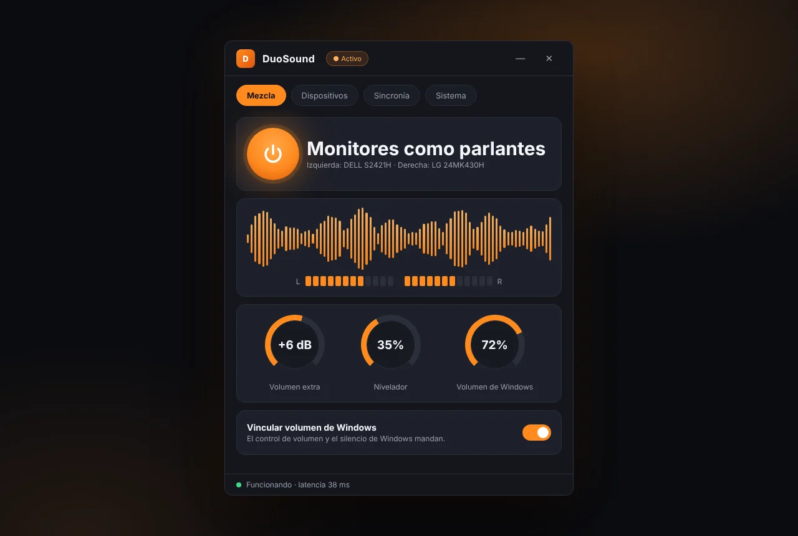
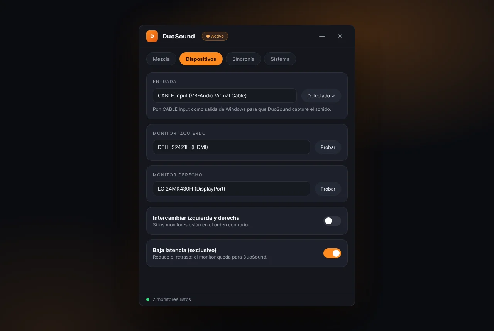
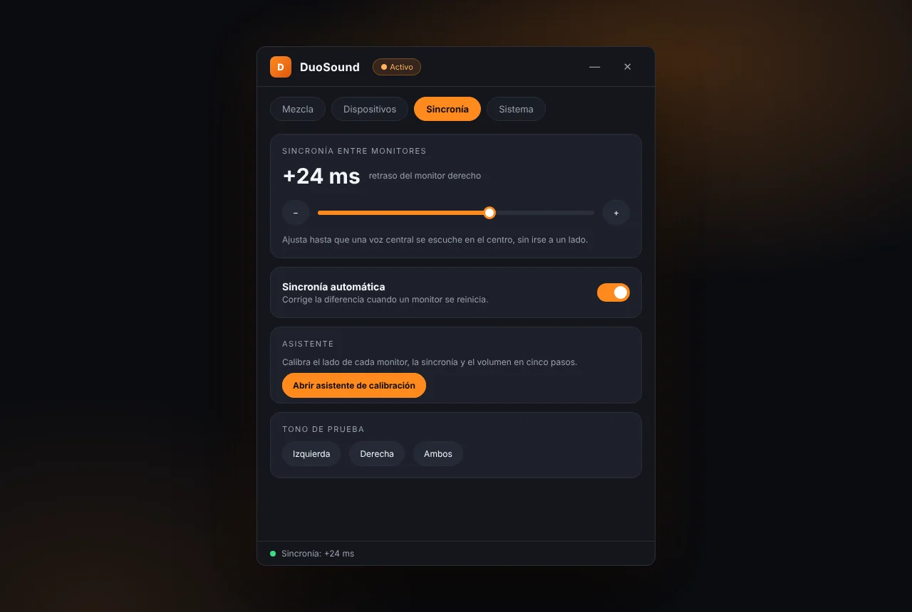
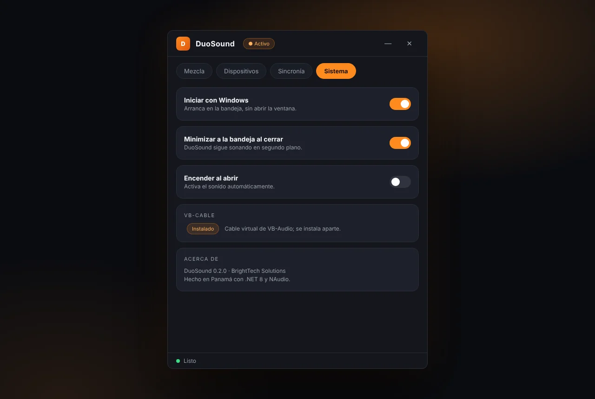
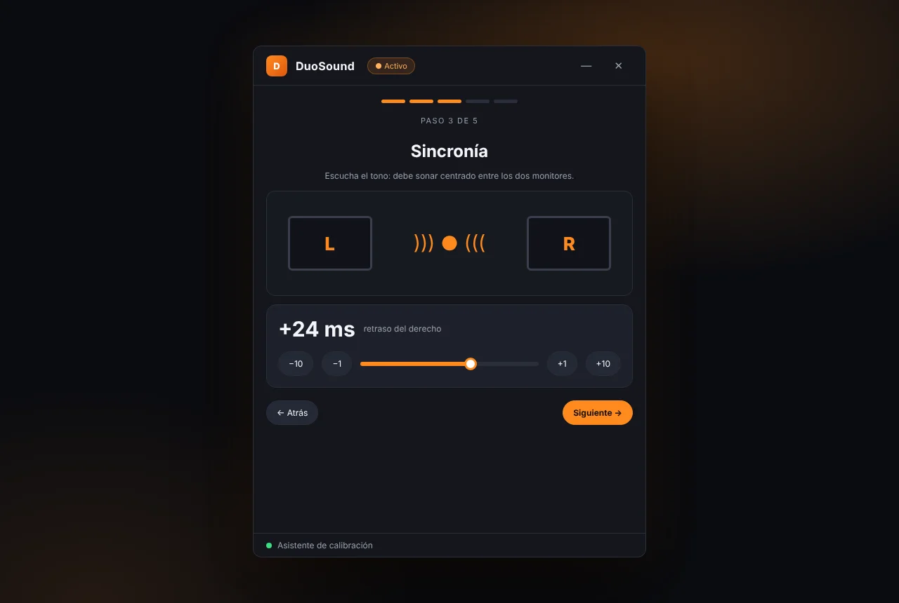

~/estereo
Un monitor por lado
One monitor per side
Cada monitor reproduce un canal. Un asistente te guía para dejar izquierda y derecha en su sitio.
Each monitor plays one channel. A wizard guides you to put left and right in the right place.
Tus dos monitores, un sistema de sonido. DuoSound toma el audio de Windows y lo reparte entre el monitor izquierdo y el derecho como parlantes estéreo, con volumen extra y sincronía ajustable, desde la bandeja del sistema.
Your two monitors, one sound system. DuoSound takes Windows audio and splits it between the left and right monitor as stereo speakers, with extra volume and adjustable sync, from the system tray.





Datos de ejemplo. Imágenes generadas a partir del diseño de la interfaz.Sample data. Images rendered from the interface design.
Cada monitor reproduce un canal. Un asistente te guía para dejar izquierda y derecha en su sitio.
Each monitor plays one channel. A wizard guides you to put left and right in the right place.
Compensa el retraso entre monitores con un ajuste fino, o deja que se corrija solo si uno se reinicia.
Compensate the delay between monitors with fine tuning, or let it fix itself if one restarts.
Sube más allá del 100 % con un limitador de dos bandas que evita que los graves ahoguen las voces.
Go past 100% with a two-band limiter that keeps bass from smothering voices.
Sigue el volumen y el silencio de Windows, con un nivelador para igualar sonidos fuertes y bajos.
Follows Windows volume and mute, with a leveler to even out loud and quiet sounds.
Modo exclusivo opcional para reducir el retraso, con margen automático para que no se corte.
Optional exclusive mode to reduce delay, with an automatic cushion to avoid dropouts.
Vive en la bandeja, puede iniciar con Windows y se abre solo cuando lo necesitas.
Lives in the tray, can start with Windows and opens only when you need it.
DuoSound necesita VB-Cable de VB-Audio, un cable de audio virtual que se instala por separado y no se distribuye con la app. Configura CABLE Input como salida de Windows y DuoSound captura ese sonido y lo envía a tus dos monitores. Funciona en Windows 10 y 11 con .NET 8.
DuoSound needs VB-Cable from VB-Audio, a virtual audio cable that is installed separately and is not distributed with the app. Set CABLE Input as the Windows output and DuoSound captures that sound and sends it to your two monitors. Works on Windows 10 and 11 with .NET 8.